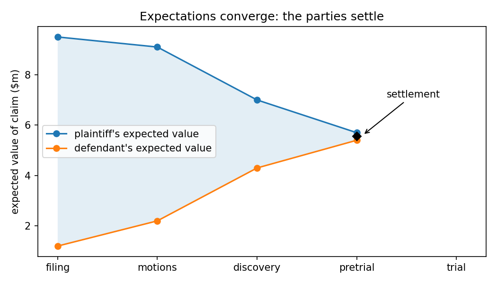
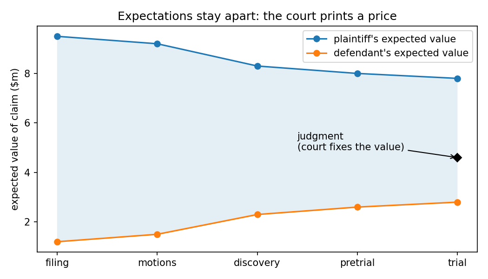
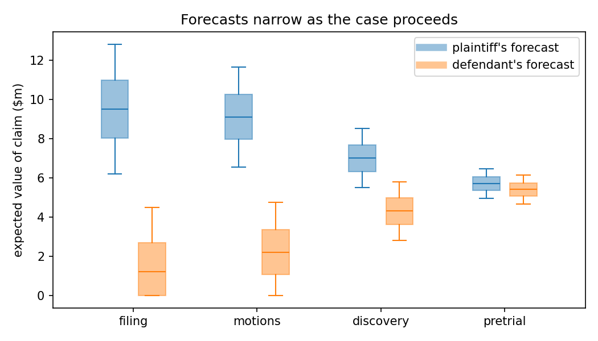
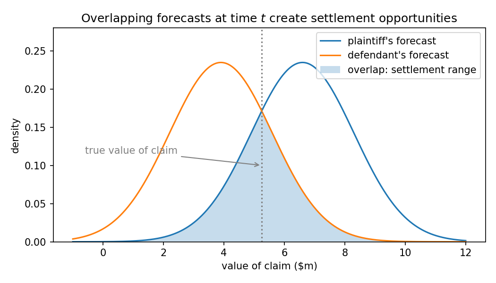

2026-08-31
About a month ago, Mark Zuckerberg wrote a piece in WSJ titled “The AI Future is for Everyone,” which you can read without paywall here.
It’s a very interesting piece and worth reading in full. In discussing alignment, he proposes the following thought experiment:
As a thought experiment, imagine only one person had a superintelligent lawyer. He would have an unfair advantage in court—even if his position was wrong on the merits. That would lead to a worse society. But now imagine everyone has a superintelligent lawyer. Justice would be carried out much more fairly and efficiently than it is today. When people are empowered, they naturally check and balance each other and the power of larger institutions.
Naturally, this generated some interesting discussion.123 I’m net-Zuck on this one, but let’s use this as an excuse to talk about two things close to my heart: law and market dynamics.
Let’s take a step back. Litigation is a social means of fixing the value of harm done to someone and compelling redress. You get hurt, you demand payment to compensate for your harm, you dispute the sum or refuse to pay, you sue. Every form of litigation is a variation of this. We’ll focus implicitly on civil litigation between private parties here because it is the most straightforward mental model.
Note that if two parties agree on the obligation to pay and the amount, there’s no need to sue. If litigation is the means of fixing the value of harm done and compelling redress, and you don’t need either of those, you don’t go to court (which is universally acknowledged to be a pain in the ass).

The parties start far apart on the expected value of the claim. As they move through the adjudication process, the expected values change in response to the behavior of the court, counterparties, and through new information produced in the discovery process. Ideally, the expected values converge as we move through the process. In this simplified model, parties settle when expected values converge (net of litigation costs, not factored here).
You can imagine a case where that never happens, and instead the value of the claim is determined by the court, as below:

A better model also captures each party’s expectations as to the potential distribution of prices:


That’s the Priest-Klein model, more or less.4
One important value of litigation as price-discovery is that the outcomes are public. The public value of precedent and the negative impact of settlement is a well-worn subject of debate.5 Certainly we do not want all (or most) disputes to go to trial. Roughly 1% of federal civil cases reach one today. Set aside whether that is already too few; the issue is what the other 99% are settling against. A settlement is a trade at a price both sides took from somewhere, and the somewhere is the stock of public outcomes. If we think of trials as the prints, settlements are marks off those prints.
Now add superintelligent lawyers. In the model above, a better lawyer does two things: narrows your distribution and moves its center toward the true value of the claim. Give both sides the best possible lawyer and both distributions narrow around the same number. Convergence happens at filing, or before filing. Fewer trials, faster settlements, cheaper justice. This is Zuck’s point, and it’s right as far as it goes.
But what are the two lawyers converging on? The best available estimate of how this court would decide, built from the public record of precedent. That estimate is the same for everyone because it’s built from the same public history,6 and it gets more identical as it gets more accurate: disagreement between two good estimators is just error one of them shouldn’t have, so the pressure to be right is also pressure to agree. (Note: it’s tempting to call this model monoculture, but accuracy is the optimization pressure. You’d get the same convergence with a hundred vendors.)
Thus we have a neat problem, where as the lawyers get better the court system actually gets worse. The estimate is only as good as the prints, the prints come from trials, and trials come from disagreement. Better prediction means less disagreement and fewer prints. This also means that the precedent pool becomes increasingly stale, and thus increasingly brittle. There’s a classic result in finance that a fully efficient market is impossible: if prices reflected all information, nobody would be paid to gather any, so nothing would get reflected.7 Same structure here. Somebody has to be paid to go to trial.
It’s actually worse than the market version, because settlements are private — when a stock is mispriced you can at least watch the price, but here everyone is marking to model with no tape.
Volatility harvesting
So who, in this world, goes to trial? This is where the litigation-funding half of the title comes in.
A legal claim has something other assets don’t — you can force a price. You don’t need a willing buyer; the court has to show up. Every claim comes with an option to compel resolution, and options are worth more when the outcome is uncertain. So in a world of good prediction, the parties who go to trial aren’t the ones who disagree about value, because nobody disagrees anymore. Instead, they’re the ones whose payoff is convex enough that the remaining variance is worth harvesting. Judgment-proof defendants. Plaintiffs with tail-heavy damages. And above all, diversified litigation funders, who are close to risk-neutral across a portfolio of trials and can hold variance nobody else can.
That makes funders the information-gatherers in the Grossman-Stiglitz sense. They pick the claims where the consensus mark is least reliable, because that’s where the variance is, they force a print, and everyone’s estimate updates.
Courts don’t enjoy being harvested, and we’ve already watched one respond. Delaware appraisal arbitrage was exactly this trade: buy into a deal, exercise appraisal rights, force Chancery to print a valuation, collect the spread between the court’s DCF and the deal price. The court’s answer was to defer to the deal price8 and the legislature narrowed the remedy, which is to say the court compressed its own variance until there was nothing left to harvest.
Drift
Was that good? In Delaware, I think yes. The deal price was a better estimate than the court’s, so the variance being harvested was the court’s own methodological error, and squashing it cost nothing. But that’s the exception, not the rule. In most of the common law, the court is the best estimate available of a target that moves: what “reasonable” means this decade, what a duty of care looks like for a technology that didn’t exist when the doctrine was written. There, the court’s variance is search, not error. Squash it and the public layer of the law that drives private ordering becomes stale. The tracking error doesn’t go away; it accumulates and discharges later, all at once.9 That’s strictly worse for anyone who wrote contracts against the old regime. Small continuous vol or occasional big vol. You get to pick, but you don’t get zero.
So whether harvesting is welfare-positive comes down to a ratio: how fast is the world drifting under the court, relative to how fast the court can drift with it. Where a better external estimate exists, defer and kill the vol. Where the court is the frontier, some vol is the price of a law that moves. I don’t have a clean answer for where that line sits, but it would be fun to try and estimate this over time.
Testing
If any of this is right, it shows up in the data. After a doctrinal shock, the share of cases going to judgment should spike and then decay as the new regime gets priced, and as prediction improves the spikes should get sharper. Patent litigation after Alice is the obvious first test. That’s the next post.
Fiss, Against Settlement, 93 Yale L.J. 1073 (1984); Galanter, The Vanishing Trial, 1 J. Empirical Legal Stud. 459 (2004). ↩
Private information is possible but converts from alpha into precedent. ↩
Grossman & Stiglitz, On the Impossibility of Informationally Efficient Markets, 70 Am. Econ. Rev. 393 (1980). ↩
DFC Global v. Muirfield Value Partners (Del. 2017); Dell v. Magnetar (Del. 2017). ↩
If you’re a real #nutjob like me, you may recall echoes of Blake LeBaron’s work on agent-based finance models and the great Michael Mauboussin memo “Who’s On the Other Side?,” both of which are worth reading. ↩